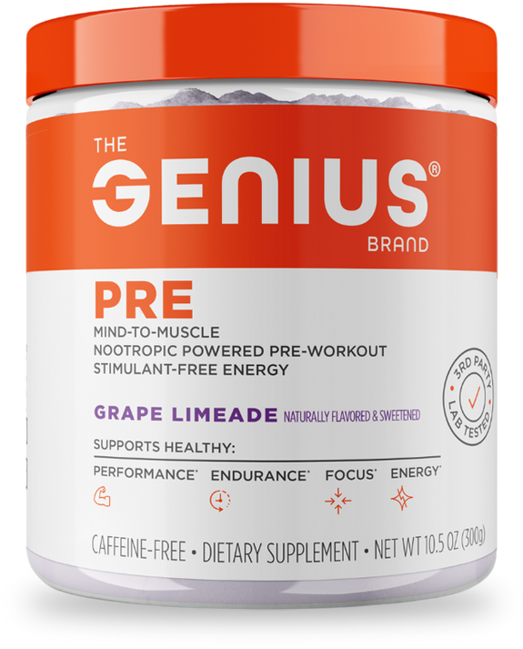

Product imagery supplied by the retailer. Packaging may vary — verify the Supplement Facts panel on the container you receive.
The Genius Brand
Genius Pre
Our analysis — editorial take, not from the label
One of the few caffeine-free pre-workouts built around theobromine and Alpha-GPC instead of a caffeine analog; the 6 g citrulline malate dose sits at the bottom of the typical research range, so pump support is more modest than fully-dosed competitors.
- Caffeine
- 0 mg
- Citrulline
- 6 gmalate
- Beta-alanine
- —
- Servings
- 20
Price tier: Premium · relative cost per full serving across this database
We don't list dollar prices — they change daily and go stale. Check the live price instead:
View current price Compare all 38 pre-workoutsScoop Sense doesn't collect user reviews and won't invent them. Read customer reviews on Amazon
Affiliate links — Scoop Sense may earn a commission at no additional cost to you.
Available in Grape Limeade, Sour Apple, Blue Raspberry, and Sour Cherry, with no artificial colors, flavors, or sweeteners.
Label verified: July 2026 · View label source
Label data
Per full serving · 20 servings per container · from the manufacturer's panel
| Caffeine | 0 mg |
|---|---|
| Citrulline Malate | 6 g |
| AlphaSize Alpha-GPC | 600 mg |
| Theobromine | 30 mg |
| Proprietary blend | No |
Primary label source: The Genius Brand official product page · verified July 2026
Cautions
- Theobromine (30 mg) is a mild stimulant chemically related to caffeine, so this isn't fully stimulant-free even though caffeine content is zero.
- Also contains beta-alanine and betaine, which can cause a harmless skin-tingling sensation; their gram doses are not consistently reported across sources, so they are omitted here.
- Citrulline malate (6 g) sits at the bottom of the typical research range rather than above it, so pump support is modest.
Product details
Where this label sits
The Genius Brand Genius Pre sits in the stim-free tier of the Scoop Sense pre-workout database, which spans 0–400 mg of caffeine per serving. Every active ingredient on the panel is listed with its own dose — nothing is hidden inside a blend total. It runs 20 servings per container at the full labeled serving. Everything on this page comes from the manufacturer's supplement facts panel as of July 2026 — never from the marketing page.
Key ingredients & studied doses
- Citrulline Malate · 6 g. At the lower end of the 6-8 g range used in most citrulline pump studies, using the malate form rather than plain L-citrulline.
- AlphaSize Alpha-GPC · 600 mg. Within the 300-600 mg range used in cognitive and power-output research on alpha-GPC.
- Theobromine · 30 mg. A small fraction of the 100-250 mg doses studied for theobromine's mild vasodilatory and stimulant-like effects.
Flavors & sweetener
Available in Grape Limeade, Sour Apple, Blue Raspberry, and Sour Cherry, with no artificial colors, flavors, or sweeteners.
Who it's best for
People who train late in the day or want zero caffeine — the effects here come from the non-stimulant ingredients. Derived from the label figures above — not medical advice.
How we log this label
Every entry is built the same way: we read the current supplement facts panel, log each disclosed dose, compare it against the amounts used in published research, flag proprietary blends, and state the cautions plainly. The full methodology explains each step.
This label against the research
How we evaluate labelsEach bar shows the amount commonly used in published human research, and where this label's dose falls against it. Research amounts are context, not a recommendation — they are not doses, and nothing here is medical advice.
-
Citrulline6 g
At or above the studied amount0studied range 6 g–8 g10 g
Studies use about 6 g of pure L-citrulline, or 8 g of citrulline malate — which is roughly 6 g of citrulline once the malate is subtracted.
-
Alpha-GPC600 mg
At or above the studied amount0studied range 300 mg–600 mg700 mg
Studied at 300–600 mg before exercise; the evidence base is small compared with caffeine or creatine.
Common questions about The Genius Brand Genius Pre
Is The Genius Brand Genius Pre really caffeine-free?
The label lists 0 mg of caffeine. It is still an active formula — ingredients like Citrulline Malate and AlphaSize Alpha-GPC are dosed to have effects — so read the full label rather than treating stim-free as effect-free.
Does The Genius Brand Genius Pre disclose every dose?
Yes — the label lists an individual amount for each ingredient, with no proprietary blends. That is what the "label fully disclosed" tag on Scoop Sense means, and it is what lets each dose be compared against the amounts used in published research.